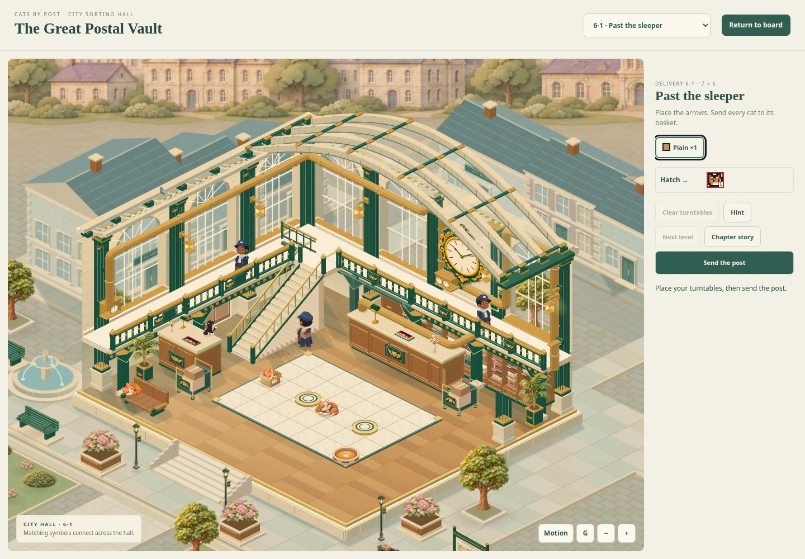
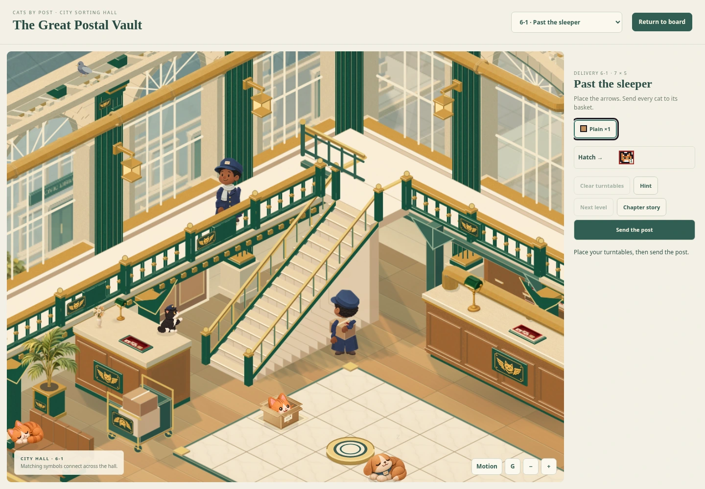
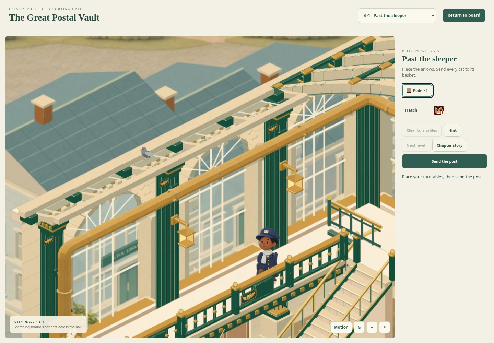
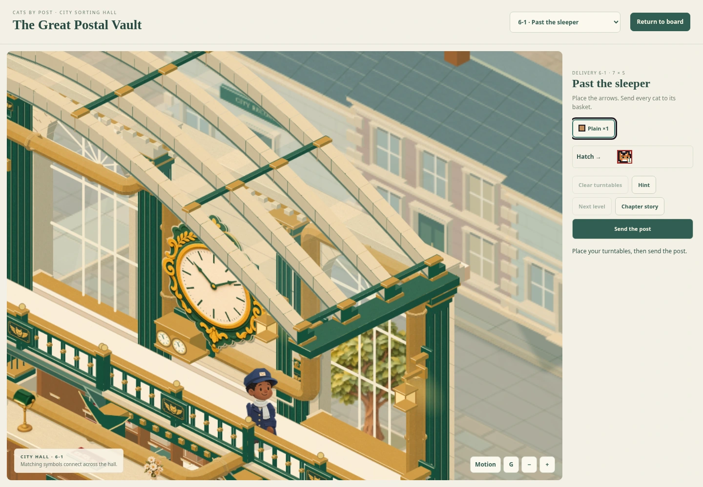
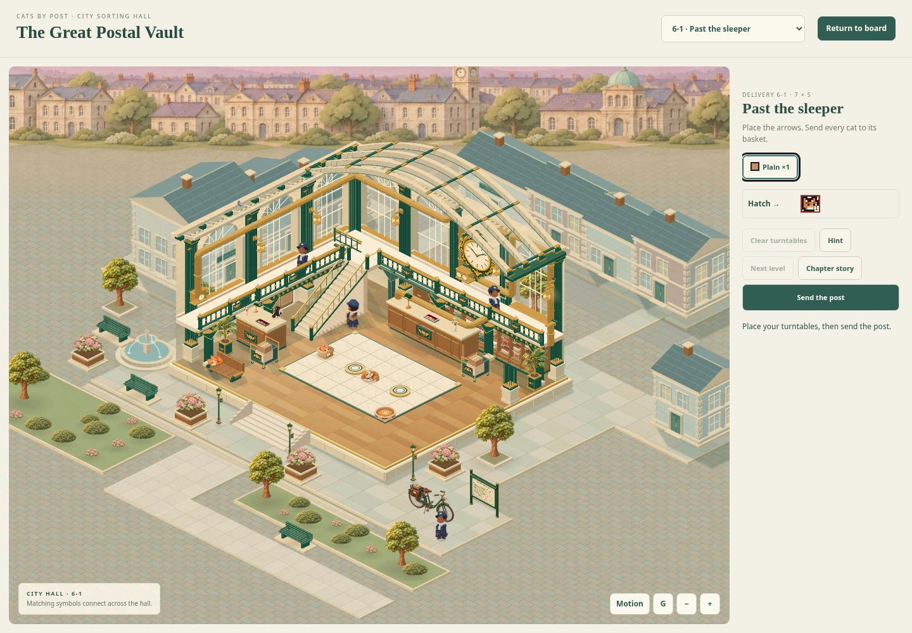
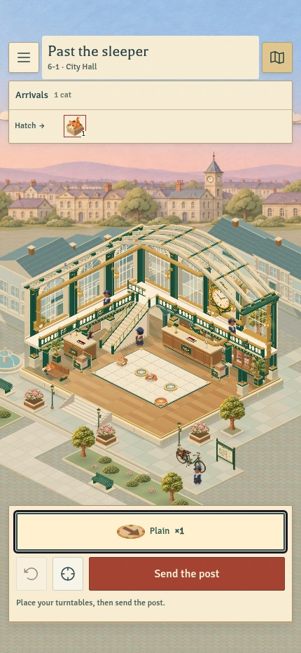

Depth around the working floor
Shadows follow the gallery, stair treads, piers and furniture. Stone remains warm on both walls; transparent glazing reflects the sky and preserves the town beyond.

Pipes made from paper
The smooth outlines and bright highlight bands are replaced by textured facets. Folded seams continue around the elbows; raised paper collars join each length. The brass colour stays, with a softer, matte finish.


A quieter town around the hall
Cooler roofs and stone help the neighbouring frontages recede. The paving uses a restrained range of tones, keeping the warm hall as the focus.

The actual phone view



Largest board on a phone · Desktop finale · Grayscale finale


Where the quality gap remains
This pass improves colour hierarchy and contact. It still does not match the references throughout: City Hall’s dense gold and green edges, regular construction and broad paving feel more diagrammatic than Town Depot’s softer finish.
The remaining finish should soften the dense edges and unify the materials, then compare the whole scene again while retaining the approved composition.
Assessment and implementation notes · Independent Astra review
Verified in the working build
All 1,723 repository tests and 15 deliveries pass, with 56 focused tests, 72 browser checks, 44 phone checks and 26 qualification checks. The three board images and all 209 registered assets remain exact. Canvas resources are unchanged, and warm rendering creates no canvases.
Full-suite and verification receipt · Matched surface measurements · Backdrop and clipping checks
Cloud Chromium and emulated phones. Physical-device performance and artistic parity are separate assessments.